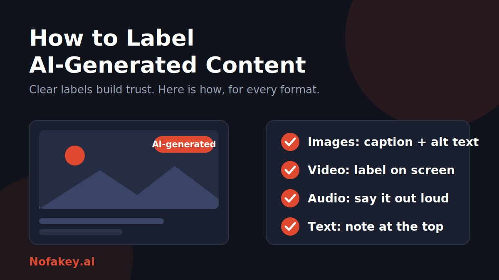

AI tools now make images, voices, videos and articles that are hard to tell from human work. Labeling is the simple habit of telling people what they are looking at, hearing or reading. Done well, it protects your audience and your credibility.
What counts as AI-generated content?
Content is AI-generated when a generative tool produced all or a meaningful part of it: an image made from a prompt, a synthetic or cloned voice, a video with generated scenes or faces, or an article drafted by a language model.
The key question is whether a reasonable person could be misled. Realistic fake faces, voices, places or events need the clearest labels. Spell-check and basic colour correction usually do not.
AI-assisted vs. fully AI-generated content
Match the label to how much AI shaped the work.
| Level | What it means | Suggested approach |
|---|---|---|
| Fully AI-generated | AI created it from a prompt with little or no human change | Label clearly and visibly |
| Heavily AI-assisted or AI-edited | A human directed it, but AI generated or changed substantial parts | Label, and say what AI did |
| Lightly AI-assisted | AI helped with brainstorming, grammar or minor cleanup; a person wrote and reviewed it | Usually optional, though a short note builds trust |
| No AI | Made by people without generative tools | No label needed. Only claim "human-made" if it is true |
A two-question test
- Could this look or sound like a real person, place or event when it is not?
- Did AI create or substantially change the core of the work?
If either answer is yes, label it.
How to label AI images, video, audio and text
Images
- Add a visible caption or small on-image note such as "AI-generated image."
- Mention it in the alt text so screen reader users get the same information.
- Keep any metadata your tool adds, and avoid stripping it on export where you can.
Video
- Put a label in the title card or a lower third, not only in the description.
- Repeat it in the caption and use the platform's AI setting where one exists.
- For realistic synthetic people or scenes, say so near the start.
Audio and podcasts
- Say it near the beginning: "This voice was generated using AI."
- Repeat the line in show notes and episode descriptions.
- Never clone a real person's voice without their permission.
Text
- Put a short note at the top of the page. A footer is easy to miss.
- State what AI did (drafted, translated, summarised) and what people did (edited, fact-checked).
- Verify facts, names and quotes. A label does not excuse an error.
Platform disclosure settings: what to look for
Menu names change often, so treat these as pointers, not exact click paths. Look on the post or upload screen before you publish.
| Platform type | Where to look |
|---|---|
| Instagram and Facebook | The advanced or sharing options on a new post or Reel, often a toggle to label the content as made with AI. These platforms may also add a label automatically when they detect AI signals. |
| TikTok | The post settings screen, under more options, where an AI-generated content toggle is offered. |
| YouTube | The video details in the studio, where a question asks about altered or synthetic content. Answer yes when the video realistically shows something that did not happen. |
| LinkedIn, X and others | A dedicated switch may not exist. Add a plain-language note in the post text or on the media itself. |
| Your own website or CMS | Add a visible label beside the content, and consider a "content origin" field so labeling stays consistent. |
A platform toggle is a good start but should not be your only disclosure. Labels differ in wording, size and visibility, so pair them with a caption of your own.
AI disclosure examples you can copy
Adjust the wording to match what you actually did.
This image was generated with AI.
Created with AI assistance and reviewed by our team.
This video contains AI-generated scenes. Nothing shown here is real footage.
The voiceover in this episode was generated using AI.
This article was drafted with AI, then edited and fact-checked by a person.
AI helped with research and grammar. All ideas and final wording are ours.
How to label AI content transparently
- Be specific. "Made with AI" is fine. "Voice generated by AI, script written by our editors" is better.
- Be visible. Put labels where people already look, before or beside the content.
- Be consistent. Use the same wording across channels so readers learn to recognise it.
- Be accessible. Do not rely on colour or tiny text alone. Mention AI use in alt text and spoken intros.
- Keep records. Note the tools and prompts you used so you can answer questions later.
- Do not over-claim or hide. Avoid false "human-made" claims and vague labels that bury the truth.
Seen AI content with no label?
Missing labels are common, and unlabeled AI content is sometimes used to deceive. If a photo, voice message or video seems off, or pushes you to act fast, pause before trusting or sharing it. Paste the text or claim into our free checker for a quick first read. For scams that use fake AI messages, see our guides on the fake AI browser extension update scam and the fake AI customer support chat scam.
Conclusion
Good labeling is simple: be honest about what AI did, put the label where people will see it, and use the same clear wording every time. Browse more guides on the Nofakey.ai blog.
Frequently asked questions
Do I have to label AI-assisted content?
Not always. Light help such as spell-checking or brainstorming usually needs no label, but be open about it when AI shaped the substance of the work or could mislead people. Check the rules for your platform and region.
Where should an AI label go?
Where people will see it: on or beside an image or video, at the top of an article, or at the start of an audio file.
Is a platform toggle enough?
Often not by itself. Platform labels vary in wording and visibility and are easy to miss, so add a short caption or on-page note of your own.
Does labeling AI content hurt trust?
Honest, clear labels tend to protect trust. Undisclosed AI use that people discover later is usually the bigger risk.
Can I label content that was only partly made with AI?
Yes, and it is a good idea. Say what AI did, for example "AI-assisted background" or "AI-translated captions."
Unsure whether something is real or AI-made?
Run it through the checker